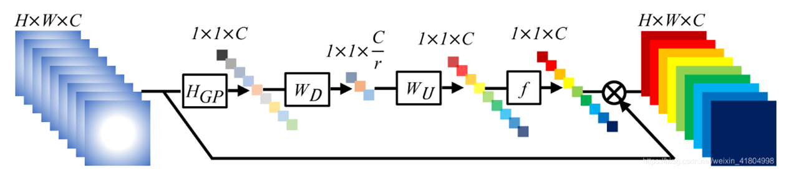

前言
這篇論文是在 2024 年在 IEEE 發表的，這篇是影像復原領域的，主要任務是去除圖片中的雨水紋 (消除雜訊)，提出了一個的模型叫做 MFDNet， 這個模型結合了傳統 CNN 和 Transformer 的優點，還有 Asymmetrical dual-path representation 這個特殊的架構，可以幫助更好地分解原本的圖片和雨水紋。

HRM (Hybrid Representation Module)

這邊要先提到 HRM 的架構，他算是這篇論文裡面最重要的一個部分，在整個模型裡用了非常多次，主要是在執行分解雨水紋和原始圖片兩種特徵。整體架構是上面右圖，可以看到他分為上下兩個通道同步進行，而這就是在前言所提到的 “Asymmetrical dual-path representation"，上面處理的是雨水紋的特徵，下面處理的是原始圖片的特徵。
再來以左右方向來看這個 module，他分成 HEFB(Hybrid Feature Extraction Block) 和 CRB(Coupled Representation Block) 兩個部分，接下來下面會以左右方向來介紹這個 module。
HEFB (Hybrid Representation Module)
首先先看到上通道的部分，又可以細分為 CAB(Channel Attention Block) 和 Trasformer Block 兩個部分：
在這個模型裡特徵會分成雨水紋和原始圖片兩個部分，最一開始拆分兩種特徵是在 Patch Embedding Module 處理的，下面會介紹。
- CAB: 如上 (a) 圖，編碼來自局部影像結構的訊息，並調整不同 channel 間的權重，並補充本地互動的不足。
Channel Attention 其實是一種調整不同 channel 權重的方式，如下圖，中間會經過 Global pooling、Down sampling、fully connection 得到所有 channel 的權重後，在和最一開始的 features 相乘，就完成調整權重的處理。

- Trasformer Block: 如上 (b) 圖，目的是為了關注雨的樣式，並區分雨條紋和背景的資訊。在 HRM 中串聯了 4 個 Trasformer Block，其中在 Trasformer Block 前面做了 down sampling (只在進入 Trasformer Block 前做) 是因為 transformer 會消耗掉比較大的計算成本。
在 Trasformer Block 中有個 Head-FC ，作者的解釋是這樣: We set up a fully connected layer across head dimensions to enhance communication among the heads.
接著是下通道的部分，這邊就是做 identity mapping 和 CAB 的處理而已，identity mapping 在論文中沒有細講。
CRB (Coupled Representation Block)
作者看到以往的論文將兩種特徵分開處理，但模型表現不好，因此把兩種特徵混合在一起做特徵萃取，中間有很多條交叉的通道就是混合的步驟。
中間的 weights 通道的架構是粉色箭頭指向的圖，這一塊主要是想調整另一個特徵的權重，因為如果直接把另一個特徵直接加進去相乘可能反而會被影響太多，因此把它調整的小一點讓他的影響力不會這麼大。
$z_R$、$z_B$: $g_R$、$g_B$ 是前面 HEFB 最後的輸出，接下來看到中間 $z_B$ 的地方，有兩個箭頭指向 $z_B$，代表有兩個輸入，這邊作者把改變過權重的輸入 (weights)和 $g_R$ 做相乘，同理的 $g_B$ 也是一樣的處理方式。
輸出結果視覺化

上圖可以看到包含雨水紋的圖片以及模型將雨水紋移除的輸出，$z_R$、$z_B$ 是 CRB 中的視覺化圖像。
MFDNet

上圖是 MFDNet 的架構，我用粉紅色框框把架構拆解成了三個部分，分別是捕捉多尺度特徵、分解雨水紋和原始圖片特徵、重組雨水紋和原始圖片。
捕捉多尺度特徵
首先看到的是最左邊的部分，輸入圖片進入模型後會先到 Patch Embedding Module，這邊就等於是做了下採樣的處理，這邊分成了三種維度大小，分別是原尺寸、1/2、1/4，進入 HRM 後，會把
分解雨水紋和原始圖片
這個部份其實就是串聯 3 個 HRM Module，是經過消融實驗得到的。
重組雨水紋和原始圖片
這邊會多這個區塊主要是為了之後 loss function 要判斷模型效能而放的，所以其實整體模型就是由很多的 HRM 組合而成而已。
Objective function (Loss function)
整個 Loss function 包含預測原始圖片的 loss 和預測雨水紋的 loss 兩個部分，裡面主要由三個函式組成:
- $\mathcal{L}_{ssim}()$ : Structural SIMilarity，指導合作網絡學習更多恢復相似結構細節
- $\mathcal{L}_{Char}()$ : Charbonnier penalty function，移除異常值、保留高頻訊息
- $\mathcal{L}_{edges}()$ : Laplacian Edge Extraction，偵測特徵的邊緣
這篇論文的 loss 是用監督式學習的方式，因為在 Char() 和 edges() 中，$I_B*$ 和 $I_B$ 分別代表 Ground truth 和預測結果，它並不是用自己預測的結果再去調整參數，所以不是自監督式學習。

實驗
在影像復原領域的資料集可以根據有無 ground truth 進行分類:
1. 有 Ground Truth
這種是把原本沒有雨水紋的圖像人工加上雨水紋路(雜訊)
以下面兩種評估指標評斷效能:
- Peak Signal to Noise Ratio (PSNR)：評估兩圖像間的相似性
- Structural SIMilarity (SSIM)：比較兩圖像間的亮度、對比度、結構

2. 無 Ground Truth
這種是自然界出現的下雨影像，所以不會有 ground truth
- Natural Image Quality Evaluator (NIQE)
- Spatial-Spectral Entropy-based Quality (SSEQ)

消融實驗
1. Loss function 中不同權重參數的比較

2. HRM 和 Transformer block 數量比較